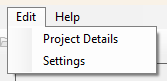
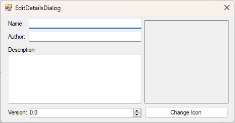

The "Project Details" button, found in the edit menu, will allow you to edit the details of the mod.

Here, you can edit the details of the mod. The icon can be left blank, and is automatically resized correctly.
The version number can be manually changed here, although it will also be automatically incremented when exporting.
